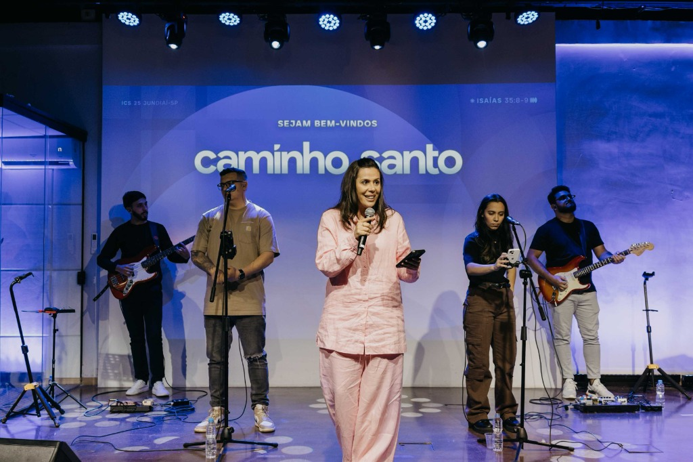

QUEM SOMOS
UMA HISTÓRIA DE
UMA HISTÓRIA DE
FÉ E PROPÓSITO
A Igreja Caminho Santo nasceu em Jundiaí com o desejo ardente de viver o Evangelho em sua plenitude. Nossa história é marcada por encontros transformadores e um compromisso inabalável com a Palavra de Deus.
Ao longo dos anos, temos visto vidas sendo restauradas e famílias encontrando um lugar de cura e pertencimento. Não somos apenas uma família, mas um corpo unido pelo amor de Cristo, dedicado a servir nossa cidade e glorificar o nome de Jesus em tudo o que fazemos.
NOSSA VISÃO
Somos uma
Somos uma
igreja fiel à Bíblia,
que acredita e se move nos
dons do Espírito Santo
para que vidas sejam salvas, curadas,
libertas, restauradas, e reconciliadas ao Pai por
meio do
amor de Cristo.
YOUTUBE
ÚLTIMAS PREGAÇÕES
CONTATO
VENHA NOS VISITAR
Domingos às 17h
R. Eugênio Lacerda, 75 - Retiro, Jundiaí - SP
13209-510 - Brasil
+55 (11) 91854-8884